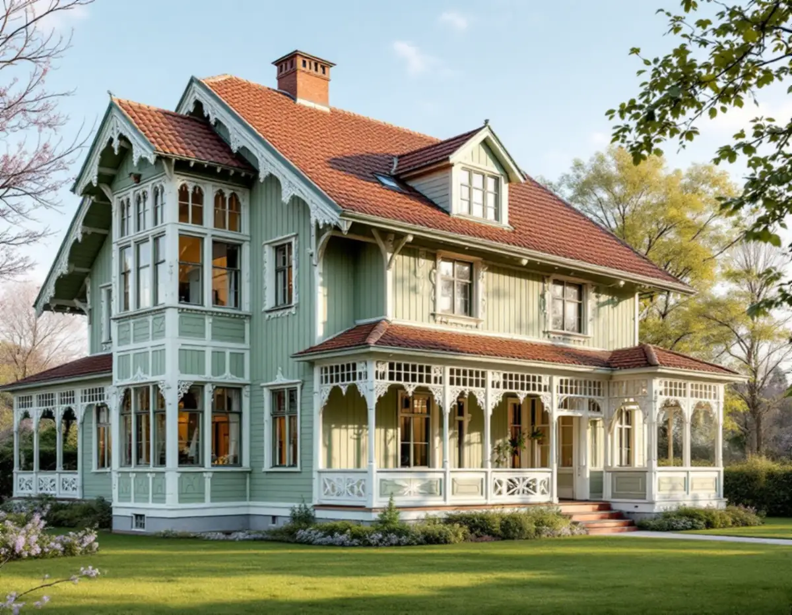
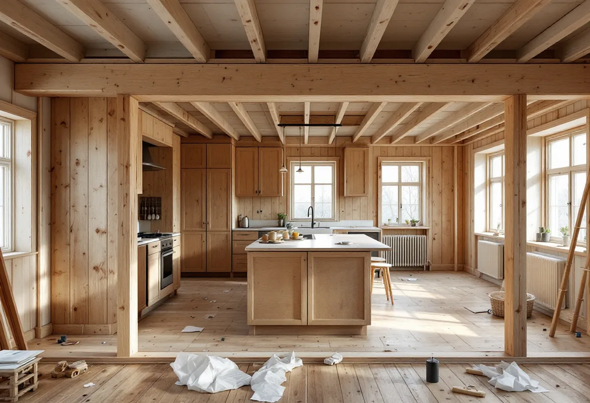

Platsbesök
Vi tittar på väggar, bjälklag, vind och veranda och tar mått.
Villastäderna i Spånga byggdes med individuellt utformade hus, de flesta i trä. När en vägg ska öppnas, vinden inredas eller en del av huset bli en egen bostad behövs både snickeri och rätt underlag till kommunen. Geal Entreprenad AB gör inredningssnickeri, väggar, trappor och verandor i Solhem, Bromsten, Flysta och Sundby, med gratis platsbesök och skriftligt kostnadsförslag.

Stockholms stads vägledning Varsam utveckling av småhus- och villaområden räknar Solhem, Bromsten, Flysta och Sundby till typen villastad. När järnvägen byggdes ut uppstod stationssamhällen utanför stadens dåvarande gränser, och på 1910-talet fick några av dem status som municipalsamhällen med egen administration och beskattningsrätt, till exempel Spånga.
Villastäderna var privat organiserade, och bebyggelsen blev därför brokigare än i stadens egna egnahemsområden. Fritt liggande hus på tomter om 1 500–3 000 kvadratmeter blev karakteristiskt, och i Solhem fick bara en tiondel av tomten bebyggas. När nya planer togs fram på 1930-talet blev tomterna mindre, 700–1 000 kvadratmeter.
Enligt stadens områdesfakta för 2025 finns 1 946 småhus med äganderätt i Solhem och 916 i Bromsten. I ett äldre hus av det slaget är det ofta väggarna, vinden och verandan som berörs när huset ska anpassas till ett nytt sätt att bo.

Boverket skriver att det inte krävs anmälan för att riva en vägg som inte är bärande, eller en vägg där man redan när huset byggdes förberedde för en öppning. Påverkas de bärande delarna väsentligt, till exempel en bärande innervägg, en balk, en pelare eller ett bjälklag, krävs en anmälan till byggnadsnämnden och ett startbesked innan arbetet börjar.
Stockholms stad påpekar att du kan logga in med bank-id i Bygg- och plantjänsten och se ritningarna för fastigheten, men att ritningarna kan vara ofullständiga och att det inte är säkert att de som byggde följde dem. Staden kan inte bedöma om ändringen berör den bärande konstruktionen, utan hänvisar till en konstruktör.
Därför öppnar vi gärna en liten inspektionslucka i tak eller vägg innan något rivs, så att konstruktören ser hur bjälkarna faktiskt ligger. Är väggen bärande dimensioneras en balk, och vi bygger in den och lagar väggar, tak och golv runt öppningen.
Stockholms stad skriver att du kan inreda ytterligare en bostad i ett enbostadshus utan bygglov, även om det inte följer detaljplanen, så länge huset eller området inte är särskilt kulturhistoriskt värdefullt. Ändras brandskydd eller bärande konstruktion, eller installeras vatten, avlopp eller en eldstad, krävs anmälan och startbesked. Fasadändringar i samband med den nya bostaden kräver inte heller bygglov under samma förutsättning.
Att inreda vinden som en del av den egna bostaden handlar mer om bjälklag, trappa och väggar. Boverket nämner att ett takfönster som sätts mellan två takstolar, utan att någon av dem behöver kapas, normalt inte påverkar den bärande konstruktionen väsentligt.
En trappa upp till vinden tar plats på planet under, och ett nytt hål i bjälklaget kan påverka bärigheten. Vi går igenom placeringen med dig och konstruktören innan bjälklaget öppnas, och bygger trappa, väggar och platsbyggda förvaringar när underlaget är klart.
Vägledningen nämner glasverandor, takkupor och snickarglädje som det som gav villastäderna deras variation, och råder att karaktärsskapande material, kulörer, byggnadsdelar och detaljer tas tillvara eller återskapas vid ombyggnad och renovering.
På en glasveranda är det de delar som tar emot vatten, som bottenstycken, fönsterbänkar och trappsteg, som brukar behöva lagas först. Vi lagar med nytt trä i samma profil, och där en del är för skadad tillverkar vi en kopia. Fler exempel på snickeri ute och inne finns på sidan om snickare.
Ska fönster eller dörrar i verandan bytas eller ändras kan det krävas bygglov, till exempel vid ändrad indelning, nya profiler eller annan upphängning. Är huset blå- eller grönmarkerat i Stadsmuseets karta krävs lov även för det som annars är lovfritt. Mer om färgen finns under målare i Spånga och om taket under takrenovering i Spånga.
Vi tittar på väggar, bjälklag, vind och veranda och tar mått.
Vi går igenom ritningarna från Bygg- och plantjänsten med dig och jämför dem med huset.
Berörs bärande delar tar en konstruktör fram underlag till anmälan.
Rivning, stomme, ytskikt och lagningar redovisas var för sig.
Vi börjar efter startbesked när sådant krävs och skyddar det som ska stå kvar.
Vi går igenom resultatet och lämnar över det underlag som hör till anmälan.
I ett småhus ger Skatteverket rotavdrag för att byta och reparera dörrar, för att montera platsbyggda fasta möbler som garderober och bokhyllor och för att reparera entrétrappor, altaner och räcken. Att montera fristående möbler ger inget avdrag.
Avdraget är 30 procent av arbetskostnaden, högst 50 000 kr per person och år och högst 75 000 kr tillsammans med rutavdrag. Material och resor ingår inte, och Geal drar avdraget direkt på fakturan.
Om väggen är bärande avgör mest, eftersom en balk, en konstruktör och en anmälan då tillkommer. Vid vindsinredning väger bjälklaget och trappan tyngst. Platsbesöket är gratis och du får ett skriftligt kostnadsförslag.
Altan, väggar, dörrar och inredning.
Snickare i Stockholm →Takbyte, takbesiktning och plåtarbeten.
Takläggare i Spånga →Solhem, Bromsten, Flysta och Sundby.
Takrenovering i Spånga →Solhem, villastäder och kök i flera lager.
Köksrenovering i Spånga →Solhems färgskala och villorna kring stationen.
Målare i Spånga →